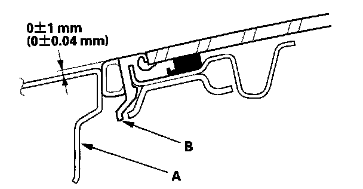
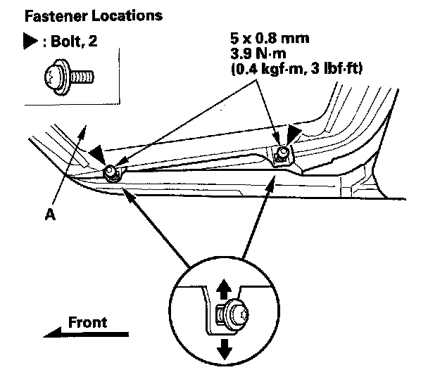

Sunroof / Moonroof: Adjustments
Glass Height Adjustment
The roof panel (A) should be even with the glass weatherstrip (B), to within 0 + 1/ - 1 mm (0 + 0.04/ - 0.04 in.) all the way around. If not, make the following adjustment:
1. Remove the bracket cover.

2. With a T25 TORX bit, loosen the bolts on each side, and adjust the glass (A).
3. If necessary, repeat on the opposite side.